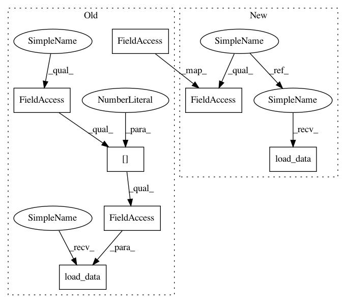

9e30290fe84353a36c064152f59a1153dfa624f2,Orange/widgets/data/owfile.py,OWFile,reload,#OWFile#,277
Before Change
self.file_combo.addItem("Browse documentation data sets...")
def reload(self):
self.source = self.LOCAL_FILE
if self.recent_paths:
basename = self.file_combo.currentText()
if (basename == self.recent_paths[0].relpath or
basename == self.recent_paths[0].value):
return self.load_data(self.recent_paths[0].abspath)
self.select_file(len(self.recent_paths) + 1)
def select_file(self, n):
self.source = self.LOCAL_FILE
After Change
self.file_combo.addItem(recent.value)
self.file_combo.model().item(i).setToolTip(recent.abspath)
def reload(self):
if self.recent_paths:
basename = self.file_combo.currentText()
if basename in [self.recent_paths[0].relpath,
self.recent_paths[0].value]:
self.source = self.LOCAL_FILE
return self.load_data()
self.select_file(len(self.recent_paths) + 1)
def select_file(self, n):
if n < len(self.recent_paths):
In pattern: SUPERPATTERN
Frequency: 3
Non-data size: 7
Instances
Project Name: biolab/orange3
Commit Name: 9e30290fe84353a36c064152f59a1153dfa624f2
Time: 2016-02-04
Author: janez.demsar@fri.uni-lj.si
File Name: Orange/widgets/data/owfile.py
Class Name: OWFile
Method Name: reload
Project Name: biolab/orange3
Commit Name: 9e30290fe84353a36c064152f59a1153dfa624f2
Time: 2016-02-04
Author: janez.demsar@fri.uni-lj.si
File Name: Orange/widgets/data/owfile.py
Class Name: OWFile
Method Name: browse_file
Project Name: biolab/orange3
Commit Name: 9e30290fe84353a36c064152f59a1153dfa624f2
Time: 2016-02-04
Author: janez.demsar@fri.uni-lj.si
File Name: Orange/widgets/data/owfile.py
Class Name: OWFile
Method Name: select_file